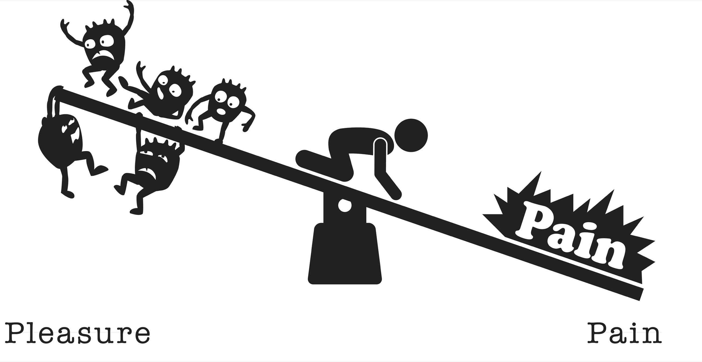

Phần III · Chương 7 — Nhấn vào phía đau đớn
PHẦN III
Theo Đuổi Nỗi Đau
CHƯƠNG 7
Nhấn Vào Phía Đau Đớn
Michael ngồi đối diện tôi, trông thoải mái trong chiếc quần jeans và áo phông. Khôi ngô trẻ trung và cuốn hút một cách tự nhiên, sức hút bẩm sinh vừa là món quà vừa là gánh nặng của anh.
“Tôi là kẻ nghiện sự chú ý,” anh nói. “Bất kỳ người bạn nào của tôi cũng sẽ nói với bạn như vậy.”
Cuộc đời của Michael từng có thời là một câu chuyện cổ tích ở Thung lũng Silicon. Sau khi tốt nghiệp đại học, anh kiếm được hàng triệu đô la trong ngành kinh doanh bất động sản. Ở tuổi ba mươi lăm, anh giàu có đáng ngưỡng mộ, điển trai khiến người khác ghen tị và có cuộc hôn nhân hạnh phúc với người phụ nữ anh yêu.
Nhưng anh còn có một cuộc sống khác, thứ chẳng bao lâu sau sẽ phá hủy mọi thứ anh đã gây dựng.
“Tôi luôn là người thích năng lượng, luôn tìm kiếm bất cứ thứ gì giúp mình phấn chấn. Cocaine là lựa chọn hiển nhiên, nhưng rượu cũng mang lại điều đó cho tôi . . . mang lại cho tôi cảm giác hưng phấn tột độ và tràn đầy năng lượng, ngay từ lần đầu tiên tôi thử. Tôi tự nhủ rằng mình sẽ là người duy nhất có thể dùng cocaine để giải trí mà không gặp rắc rối gì. Lúc đó, tôi thực sự tin như vậy.” Anh dừng lại và mỉm cười. “Đáng lẽ tôi phải biết trước chứ.
“Khi vợ tôi nói rằng giải quyết chứng nghiện của tôi sẽ là cách duy nhất để cứu vãn cuộc hôn nhân của chúng tôi, tôi thậm chí không hề do dự. Tôi muốn có cô ấy. Tôi muốn giữ cuộc hôn nhân này. Hồi phục là lựa chọn duy nhất.”
Với Michael, cai nghiện không phải là phần khó nhất. Phần khó là tìm ra việc phải làm tiếp theo. Sau khi cai, anh bị nhấn chìm bởi tất cả những cảm xúc tiêu cực mà trước đây anh vẫn dùng ma túy để che đậy. Khi không cảm thấy buồn bã, tức giận và xấu hổ, anh lại chẳng cảm thấy gì cả, điều đó có lẽ còn tệ hơn. Rồi anh tình cờ phát hiện ra một thứ mang lại cho mình hy vọng.
“Lần đầu tiên chuyện đó xảy ra,” anh kể với tôi, “là một sự tình cờ. Tôi thường dậy sớm vào buổi sáng để tập quần vợt . . . một cách để đánh lạc hướng bản thân trong những ngày đầu không dùng thuốc. Nhưng một tiếng sau khi chơi quần vợt và tắm xong, tôi vẫn đổ mồ hôi. Tôi kể chuyện đó với huấn luyện viên quần vợt của mình, và anh ấy gợi ý tôi thử tắm nước lạnh xem sao. Nước lạnh hơi buốt một chút, nhưng chỉ vài giây đầu cho đến khi cơ thể tôi quen dần. Khi bước ra, tôi cảm thấy dễ chịu một cách đáng ngạc nhiên, giống như vừa uống một tách cà phê thật ngon vậy.
“Trong vài tuần tiếp theo, tôi bắt đầu nhận thấy tâm trạng của mình sau khi tắm nước lạnh tốt hơn hẳn. Tôi tìm hiểu về liệu pháp nước lạnh trên mạng và tìm thấy một cộng đồng những người tắm bồn nước đá. Nghe có vẻ hơi điên rồ, nhưng tôi đang tuyệt vọng. Làm theo họ, tôi chuyển từ tắm vòi sen nước lạnh sang xả đầy nước lạnh vào bồn tắm và ngâm mình trong đó. Cách đó còn hiệu quả hơn, nên tôi tăng độ khó và thêm đá vào bồn nước để hạ nhiệt độ xuống thấp hơn nữa. Nhờ vậy, tôi có thể hạ nhiệt độ xuống khoảng 10–13 độ C.
“Tôi đã tạo thành thói quen ngâm mình trong nước đá từ năm đến mười phút mỗi sáng và một lần nữa ngay trước khi đi ngủ. Tôi duy trì việc đó mỗi ngày suốt ba năm tiếp theo. Đó là chìa khóa cho quá trình hồi phục của tôi.”
“Cảm giác như thế nào,” tôi hỏi, “khi ngâm mình trong nước lạnh?” Bản thân tôi rất sợ nước lạnh và không thể chịu đựng được nhiệt độ đó dù chỉ vài giây.
“Trong năm đến mười giây đầu tiên, cơ thể tôi gào thét: Dừng lại, anh đang tự giết mình đấy. Nó đau buốt đến thế cơ mà.”
“Tôi có thể tưởng tượng được.”
“Nhưng tôi tự nhủ rằng nó chỉ diễn ra trong thời gian ngắn thôi, và hoàn toàn xứng đáng. Sau cú sốc ban đầu, da tôi tê đi. Ngay khi bước ra, tôi cảm thấy phê. Nó giống hệt như dùng thuốc . . . giống như cảm giác tôi nhớ về thuốc lắc hay Vicodin dùng để giải trí vậy. Thật không thể tin nổi. Tôi cảm thấy tuyệt vời suốt hàng giờ liền.”
Trong phần lớn lịch sử nhân loại, con người tắm bằng nước lạnh. Chỉ những người sống gần suối nước nóng tự nhiên mới có thể thường xuyên tận hưởng việc tắm nước nóng. Chẳng trách người xưa thường ở bẩn hơn.
Người Hy Lạp cổ đại đã phát triển hệ thống sưởi cho các nhà tắm công cộng nhưng vẫn tiếp tục ủng hộ việc sử dụng nước lạnh để điều trị nhiều loại bệnh tật. Vào những năm 1920, một nông dân người Đức tên là Vincenz Priessnitz đã quảng bá việc dùng nước lạnh buốt như đá để chữa mọi loại rối loạn thể chất và tâm lý. Ông thậm chí còn biến ngôi nhà của mình thành một viện điều dưỡng chuyên trị liệu bằng nước đá.
Kể từ khi hệ thống ống nước và sưởi ấm hiện đại ra đời, việc tắm bồn và tắm vòi sen nước nóng đã trở thành chuẩn mực; nhưng gần đây, phương pháp ngâm mình trong nước đá lại trở nên phổ biến trở lại.
Các vận động viên sức bền khẳng định nó giúp đẩy nhanh quá trình phục hồi cơ bắp. Kiểu “tắm Scotland”, còn gọi là “kiểu tắm James Bond” như nhân vật James Bond thực hành trong tiểu thuyết 007 của Ian Fleming, gần đây rất thịnh hành và bao gồm việc kết thúc một lần tắm nước nóng bằng ít nhất một phút tắm nước lạnh.
Những bậc thầy về ngâm mình trong nước đá như người đàn ông Hà Lan Wim Hof đã trở thành những người nổi tiếng theo cách riêng của họ nhờ khả năng ngâm mình hàng giờ liền trong nhiệt độ gần đóng băng.
Các nhà khoa học tại Đại học Charles ở Praha, trong một bài viết trên tạp chí European Journal of Applied Physiology, đã tiến hành một thí nghiệm trong đó mười người đàn ông tình nguyện ngâm mình (trừ phần đầu) trong nước lạnh (14 độ C) suốt một giờ. Mức nhiệt này tương đương 57 độ F.
Sử dụng các mẫu máu, các nhà nghiên cứu chỉ ra rằng nồng độ dopamine trong huyết tương (máu) tăng 250%, và nồng độ norepinephrine trong huyết tương tăng 530% nhờ việc ngâm mình trong nước lạnh.
Dopamine tăng dần đều trong suốt thời gian tắm lạnh và duy trì ở mức cao trong một giờ sau đó. Norepinephrine tăng vọt trong ba mươi phút đầu, đi ngang trong ba mươi phút tiếp theo và giảm khoảng một phần ba trong một giờ sau đó, nhưng vẫn duy trì cao hơn hẳn mức nền ngay cả sang giờ thứ hai sau khi tắm. Nồng độ dopamine và norepinephrine kéo dài vượt xa bản thân kích thích gây đau, điều này giải thích cho câu nói của Michael: “Ngay khi bước ra . . . tôi cảm thấy tuyệt vời suốt hàng giờ liền.”
Các nghiên cứu khác xem xét tác động lên não bộ của việc ngâm nước lạnh ở người và động vật cũng cho thấy sự gia tăng tương tự ở các chất dẫn truyền thần kinh monoamine (dopamine, norepinephrine, serotonin), chính là những chất dẫn truyền thần kinh điều hòa khoái cảm, động lực, tâm trạng, sự thèm ăn, giấc ngủ và sự tỉnh táo.
Vượt ra ngoài các chất dẫn truyền thần kinh, cái lạnh cực độ ở động vật đã được chứng minh là thúc đẩy sự phát triển của tế bào thần kinh, điều càng đáng kinh ngạc hơn vì tế bào thần kinh chỉ thay đổi vi cấu trúc của chúng để đáp ứng với một số ít hoàn cảnh nhất định.
Christina G. von der Ohe và các đồng nghiệp đã nghiên cứu não bộ của loài sóc đất ngủ đông. Trong thời gian ngủ đông, cả nhiệt độ cơ thể và nhiệt độ não đều giảm xuống mức 0,5–3 độ C. Ở nhiệt độ đóng băng, các tế bào thần kinh của sóc đất ngủ đông trông giống như những cái cây khẳng khiu với ít cành (sợi nhánh) và thậm chí càng ít lá (vi sợi nhánh).
Tuy nhiên, khi sóc đất ngủ đông được làm ấm trở lại, các tế bào thần kinh cho thấy sự tái sinh đáng kinh ngạc, giống như một khu rừng rụng lá vào độ cao trào của mùa xuân. Sự tái sinh này diễn ra nhanh chóng, sánh ngang với kiểu khả biến thần kinh vốn chỉ thấy trong quá trình phát triển phôi thai.
Các tác giả nghiên cứu viết về phát hiện của họ: “Những thay đổi cấu trúc mà chúng tôi đã chứng minh ở não bộ động vật ngủ đông nằm trong số những thay đổi ngoạn mục nhất từng được tìm thấy trong tự nhiên. . . . Trong khi sự kéo dài sợi nhánh có thể đạt 114 micromet mỗi ngày ở hồi hải mã của phôi khỉ rhesus đang phát triển, thì động vật ngủ đông trưởng thành lại thể hiện những thay đổi tương tự chỉ trong vòng 2 giờ.”
Việc Michael tình cờ phát hiện ra lợi ích của việc ngâm mình trong nước đá là một ví dụ về cách việc nhấn vào phía đau đớn của cán cân có thể dẫn đến điều ngược lại — khoái lạc. Không giống như việc nhấn vào phía khoái lạc, lượng dopamine đến từ nỗi đau mang tính gián tiếp và có khả năng kéo dài hơn. Vậy nó hoạt động như thế nào?
Nỗi đau dẫn đến khoái lạc bằng cách kích hoạt các cơ chế cân bằng nội môi tự điều chỉnh của chính cơ thể. Trong trường hợp này, kích thích đau ban đầu được tiếp nối bằng việc các tiểu yêu nhảy sang phía khoái lạc của cán cân.

Khoái lạc mà chúng ta cảm thấy là phản ứng sinh lý tự nhiên và mang tính phản xạ của cơ thể trước nỗi đau. Việc Martin Luther hành xác thông qua nhịn ăn và tự đánh đập bản thân có thể đã khiến ông hơi “phê” một chút, ngay cả khi việc đó xuất phát từ lý do tôn giáo.
Khi tiếp xúc ngắt quãng với nỗi đau, điểm cân bằng khoái cảm tự nhiên của chúng ta sẽ nghiêng về phía khoái lạc, khiến theo thời gian chúng ta trở nên ít dễ bị tổn thương bởi nỗi đau hơn và có khả năng cảm nhận khoái lạc nhiều hơn.

Vào cuối những năm 1960, các nhà khoa học đã tiến hành một loạt thí nghiệm trên chó; do tính chất tàn nhẫn hiển nhiên của các thí nghiệm này, chúng sẽ không được phép thực hiện ngày nay, nhưng dù sao chúng vẫn cung cấp thông tin quan trọng về cân bằng nội môi của não bộ (hay việc làm cân bằng lại cán cân).
Sau khi nối hai chân sau của con chó với dòng điện, các nhà nghiên cứu quan sát thấy: “Con chó tỏ ra khiếp sợ trong vài cú sốc đầu tiên. Nó kêu ré lên và giãy giụa dữ dội, đồng tử giãn ra, mắt trợn lồi, lông dựng đứng, tai cụp ra sau, đuôi quắp giữa hai chân. Hiện tượng đại tiện và tiểu tiện tống xuất, cùng với nhiều triệu chứng hoạt động mạnh mẽ của hệ thần kinh tự chủ khác, đã được ghi nhận.”
Sau cú sốc đầu tiên, khi con chó được thả khỏi dây đai, “nó di chuyển chậm chạp quanh phòng, tỏ ra lén lút, ngập ngừng và không thân thiện.” Nhịp tim của con chó tăng lên 150 nhịp mỗi phút so với mức nền khi nghỉ ngơi trong cú sốc đầu tiên. Khi cú sốc kết thúc, nhịp tim của con chó chậm lại còn 30 nhịp dưới mức nền trong trọn một phút.
Qua các cú sốc điện tiếp theo, “hành vi của nó dần thay đổi. Trong lúc bị sốc, các dấu hiệu kinh hoàng biến mất. Thay vào đó, con chó tỏ ra đau đớn, khó chịu hoặc lo âu, nhưng không còn khiếp sợ nữa. Chẳng hạn, nó rên ư ử thay vì kêu ré lên, và không còn tiểu tiện, đại tiện hay vùng vẫy nữa. Rồi khi được thả ra bất ngờ vào cuối buổi thử nghiệm, con chó chạy lao quanh, nhảy chồm lên người mọi người, vẫy đuôi, trong trạng thái mà khi đó chúng tôi gọi là ‘một cơn hân hoan’.”
Với những cú sốc tiếp theo, nhịp tim của con chó chỉ tăng nhẹ trên mức nền khi nghỉ ngơi, và chỉ trong vài giây. Sau khi cú sốc kết thúc, nhịp tim chậm lại mạnh mẽ tới 60 nhịp mỗi phút dưới mức nền khi nghỉ ngơi, gấp đôi lần đầu tiên. Phải mất trọn năm phút nhịp tim mới trở lại mức nền khi nghỉ ngơi.
Khi tiếp xúc lặp đi lặp lại với một kích thích gây đau, tâm trạng và nhịp tim của con chó đã thích nghi tương ứng. Phản ứng ban đầu (đau đớn) trở nên ngắn hơn và yếu hơn. Phản ứng sau đó (khoái lạc) trở nên dài hơn và mạnh hơn. Nỗi đau biến thành sự cảnh giác cao độ rồi biến thành “một cơn hân hoan”. Nhịp tim tăng cao, phù hợp với phản ứng chiến-hay-chạy, biến thành sự gia tăng nhịp tim tối thiểu theo sau bởi tình trạng nhịp tim chậm kéo dài, một nhịp tim chậm rãi thường thấy ở các trạng thái thư giãn sâu.
Không thể đọc thí nghiệm này mà không cảm thấy thương xót cho những con vật phải chịu đựng sự tra tấn đó. Tuy nhiên, cái gọi là “cơn hân hoan” lại gợi mở một khả năng đầy sức hấp dẫn: Bằng cách nhấn vào phía đau đớn của cán cân, liệu chúng ta có thể đạt được một nguồn khoái lạc bền vững hơn không?
Ý tưởng này không hề mới. Các triết gia cổ đại đã quan sát thấy một hiện tượng tương tự. Socrates (như được Plato ghi lại trong “Những lý do khiến Socrates không sợ cái chết”) đã suy ngẫm về mối quan hệ giữa nỗi đau và khoái lạc hơn hai nghìn năm trước:
Cái thứ mà người ta gọi là khoái lạc sao mà kỳ lạ đến thế! Và nó có mối liên hệ kỳ quặc làm sao với thứ được cho là đối lập với nó, nỗi đau! Hai thứ đó sẽ không bao giờ cùng tồn tại trong một con người, vậy mà nếu bạn tìm kiếm một thứ và đạt được nó, gần như chắc chắn bạn cũng sẽ nhận được thứ kia, cứ như thể cả hai đều gắn liền vào cùng một cái đầu vậy. . . . Bất cứ nơi nào có một thứ, thứ kia sẽ theo sát phía sau. Vì thế, trong trường hợp của tôi, vì chân tôi bị đau do xiềng xích, nên dường như khoái lạc đã đến tiếp nối ngay sau đó.
Bác sĩ tim mạch người Mỹ Helen Taussig đã công bố một bài báo trên tạp chí American Scientist năm 1969, trong đó bà mô tả trải nghiệm của những người bị sét đánh nhưng sống sót để kể lại. “Con trai của người hàng xóm nhà tôi bị sét đánh khi đang từ sân golf trở về. Cậu bị hất văng xuống đất. Chiếc quần đùi bị xé toạc thành từng mảnh và cậu bị bỏng ngang đùi. Khi người bạn đi cùng đỡ cậu ngồi dậy, cậu hét lên ‘Tôi chết rồi, tôi chết rồi.’ Hai chân cậu tê dại, tím tái và không thể cử động. Nhưng đến khi tới được bệnh viện gần nhất, cậu lại ở trong trạng thái hưng phấn tột độ. Mạch của cậu rất chậm.” Lời kể này gợi nhớ đến “cơn hân hoan” của chú chó, bao gồm cả nhịp mạch chậm lại.
Tất cả chúng ta đều từng trải qua một phiên bản nào đó của việc nỗi đau nhường chỗ cho khoái lạc. Có lẽ giống như Socrates, bạn từng nhận thấy tâm trạng khá lên sau một đợt ốm, hoặc cảm thấy “cơn phê của người chạy bộ” sau khi tập thể dục, hay tìm thấy một niềm vui khó lý giải khi xem một bộ phim kinh dị. Cũng như nỗi đau là cái giá ta phải trả cho khoái lạc, thì khoái lạc cũng là phần thưởng của ta cho nỗi đau.
Khoa Học Về Hormesis
Hormesis là một nhánh khoa học nghiên cứu những tác động có lợi của việc đưa vào cơ thể các liều lượng nhỏ đến vừa phải những kích thích độc hại và/hoặc gây đau đớn, chẳng hạn như cái lạnh, cái nóng, thay đổi trọng lực, bức xạ, hạn chế ăn uống và tập thể dục. Hormesis bắt nguồn từ tiếng Hy Lạp cổ đại hormáein: khởi động, thúc đẩy, thôi thúc.
Edward J. Calabrese, một nhà độc chất học người Mỹ và là chuyên gia hàng đầu trong lĩnh vực hormesis, mô tả hiện tượng này là “những phản ứng thích nghi của các hệ thống sinh học trước những thách thức vừa phải từ môi trường hoặc tự áp đặt, qua đó hệ thống cải thiện chức năng và/hoặc khả năng dung nạp đối với những thách thức khắc nghiệt hơn.”
Những con giun tiếp xúc với nhiệt độ cao hơn mức ưa thích 20 độ C của chúng (35 độ C trong hai giờ) sống lâu hơn 25% và có khả năng sống sót sau các đợt nhiệt độ cao tiếp theo cao hơn 25% so với những con giun không tiếp xúc. Nhưng quá nhiều nhiệt lại không tốt. Bốn giờ tiếp xúc với nhiệt thay vì hai giờ làm giảm khả năng chịu nhiệt sau đó và giảm tuổi thọ đi một phần tư.
Ruồi giấm được quay trong máy ly tâm từ hai đến bốn tuần không chỉ sống lâu hơn những con ruồi không bị quay mà còn nhanh nhẹn hơn khi về già, có thể leo cao hơn và lâu hơn so với đồng loại không tiếp xúc. Nhưng những con ruồi bị quay lâu hơn thế lại không phát triển tốt.
Trong số các công dân Nhật Bản sống bên ngoài tâm chấn của vụ tấn công hạt nhân năm 1945, những người phơi nhiễm bức xạ liều thấp có thể đã cho thấy tuổi thọ nhỉnh hơn một chút và tỷ lệ ung thư giảm so với những người không bị chiếu xạ. Trong số những người sống ngay trong vùng lân cận vụ nổ nguyên tử, khoảng 200.000 người đã thiệt mạng ngay lập tức.
Các tác giả đưa ra giả thuyết rằng “sự kích thích liều thấp đối với quá trình sửa chữa tổn thương DNA, việc loại bỏ các tế bào bất thường thông qua cơ chế apoptosis [chết tế bào theo chương trình] được kích thích, và việc tiêu diệt các tế bào ung thư thông qua khả năng miễn dịch chống ung thư được kích thích” là cốt lõi của những tác động có lợi từ hormesis bức xạ.
Cần lưu ý rằng những phát hiện này đang gây tranh cãi, và một bài báo tiếp theo được công bố trên tạp chí danh tiếng Lancet đã bác bỏ chúng.
Nhịn ăn gián đoạn và hạn chế calo giúp kéo dài tuổi thọ và tăng sức đề kháng với các bệnh liên quan đến tuổi tác ở loài gặm nhấm và khỉ, đồng thời làm giảm huyết áp và tăng độ biến thiên nhịp tim.
Nhịn ăn gián đoạn đã trở nên khá phổ biến như một cách để giảm cân và cải thiện sức khỏe. Các phương pháp nhịn ăn bao gồm nhịn ăn cách ngày, nhịn ăn một ngày mỗi tuần, nhịn ăn đến giờ thứ chín, ăn một bữa mỗi ngày, nhịn ăn 16:8 (nhịn ăn mười sáu giờ mỗi ngày và ăn toàn bộ khẩu phần trong khung tám giờ còn lại), v.v.
Người dẫn chương trình talk show nổi tiếng người Mỹ Jimmy Kimmel thực hành nhịn ăn gián đoạn. “Một điều tôi đã làm suốt vài năm nay là tự bỏ đói bản thân hai ngày một tuần. . . . Vào thứ Hai và thứ Năm, tôi ăn ít hơn năm trăm calo mỗi ngày, rồi tôi ăn như hạm vào năm ngày còn lại. Bạn ‘gây bất ngờ’ cho cơ thể, khiến nó phải đoán già đoán non.”
Cách đây không lâu, những hành vi nhịn ăn như vậy có thể đã bị gắn mác “rối loạn ăn uống”. Nạp quá ít calo rõ ràng là có hại vì những lý do hiển nhiên. Nhưng ngày nay, nhịn ăn trong một số giới lại được coi là bình thường và thậm chí tốt cho sức khỏe.
Còn việc tập thể dục thì sao?
Tập thể dục gây độc tức thời cho tế bào, dẫn đến tăng nhiệt độ, sản sinh các chất oxy hóa độc hại, và thiếu hụt oxy cũng như glucose. Tuy nhiên, bằng chứng là không thể chối cãi rằng tập thể dục giúp tăng cường sức khỏe, và việc thiếu tập thể dục, đặc biệt khi kết hợp với lối sống ít vận động ăn uống triền miên — ăn quá nhiều suốt cả ngày — là vô cùng chết người.
Tập thể dục làm tăng nhiều chất dẫn truyền thần kinh tham gia vào việc điều hòa tâm trạng tích cực: dopamine, serotonin, norepinephrine, epinephrine, endocannabinoid, và các peptide opioid nội sinh (endorphin). Tập thể dục góp phần tạo ra các tế bào thần kinh mới và các tế bào thần kinh đệm hỗ trợ. Tập thể dục thậm chí còn làm giảm khả năng sử dụng và nghiện ma túy.
Khi chuột được tiếp cận bánh xe chạy sáu tuần trước khi được tự do tiếp cận cocaine, chúng tự tiêm cocaine muộn hơn và ít thường xuyên hơn so với những con chuột không được tập chạy bánh xe trước đó. Phát hiện này đã được tái lập với heroin, methamphetamine và rượu. Ngay cả khi việc tập thể dục không phải tự nguyện mà bị ép buộc lên con vật, nó vẫn dẫn đến việc giảm tiêu thụ ma túy tự nguyện.
Ở người, mức độ hoạt động thể chất cao ở bậc trung học cơ sở, trung học phổ thông và đầu tuổi trưởng thành dự báo mức độ sử dụng ma túy thấp hơn. Tập thể dục cũng đã được chứng minh là giúp những người đang nghiện ngừng hẳn hoặc cắt giảm.
Tầm quan trọng của dopamine đối với các mạch vận động đã được ghi nhận ở mọi ngành động vật từng được nghiên cứu. Giun tròn C. elegans, một loài giun và là một trong những động vật thí nghiệm đơn giản nhất, giải phóng dopamine để đáp ứng với các kích thích môi trường báo hiệu sự dồi dào thức ăn tại chỗ. Vai trò cổ xưa của dopamine trong chuyển động thể chất liên quan đến vai trò của nó trong động lực: Để có được đối tượng mà mình khao khát, chúng ta cần phải đi lấy nó.
Tất nhiên, nguồn dopamine dễ tiếp cận ngày nay không đòi hỏi chúng ta phải nhấc mông khỏi ghế sofa. Theo các báo cáo khảo sát, người Mỹ điển hình ngày nay dành một nửa thời gian thức để ngồi, nhiều hơn 50% so với năm mươi năm trước. Dữ liệu từ các quốc gia giàu có khác trên toàn cầu cũng tương đương. Khi bạn nghĩ rằng chúng ta đã tiến hóa để đi bộ hàng chục kilômét mỗi ngày nhằm cạnh tranh nguồn thức ăn hạn hẹp, những tác động tiêu cực của lối sống ít vận động hiện đại thực sự tàn khốc.
Đôi khi tôi tự hỏi liệu khuynh hướng dễ nghiện ngập thời hiện đại của chúng ta có phải một phần được thúc đẩy bởi cách ma túy nhắc nhở chúng ta rằng mình vẫn có một cơ thể hay không. Những trò chơi điện tử phổ biến nhất đều có các nhân vật đại diện chạy, nhảy, leo trèo, bắn súng và bay lượn. Chiếc điện thoại thông minh đòi hỏi chúng ta phải cuộn qua các trang và chạm vào màn hình, khai thác một cách khéo léo những thói quen vận động lặp đi lặp lại từ thời cổ đại, có lẽ được hình thành qua nhiều thế kỷ xay lúa mì và hái quả mọng. Sự bận tâm của con người đương đại với tình dục có lẽ là vì đó là hoạt động thể chất cuối cùng vẫn còn được thực hành rộng rãi.
Một chìa khóa dẫn đến sự khỏe mạnh là chúng ta phải đứng dậy khỏi ghế sofa và vận động cơ thể thực sự của mình, chứ không phải cơ thể ảo. Như tôi vẫn nói với bệnh nhân của mình, chỉ cần đi bộ quanh khu phố ba mươi phút mỗi ngày cũng có thể tạo ra sự khác biệt. Đó là bởi vì bằng chứng đã quá rõ ràng: Tập thể dục có tác động tích cực sâu sắc và bền vững hơn đối với tâm trạng, sự lo âu, nhận thức, năng lượng và giấc ngủ so với bất kỳ viên thuốc nào tôi có thể kê đơn.
Nhưng theo đuổi nỗi đau khó hơn theo đuổi khoái lạc. Nó đi ngược lại phản xạ bẩm sinh của chúng ta là tránh đau đớn và tìm kiếm khoái lạc. Nó làm tăng gánh nặng nhận thức của chúng ta: Chúng ta phải nhớ rằng mình sẽ cảm thấy khoái lạc sau nỗi đau, và chúng ta lại hay quên một cách đáng kinh ngạc về những chuyện như thế này. Tôi biết mình phải học lại bài học về nỗi đau mỗi sáng khi tự ép bản thân ra khỏi giường và đi tập thể dục.
Theo đuổi nỗi đau thay vì khoái lạc cũng đi ngược lại văn hóa đại chúng, chống lại mọi thông điệp “hãy cảm thấy dễ chịu” đang thấm đẫm trong rất nhiều khía cạnh của đời sống hiện đại. Đức Phật dạy tìm kiếm Trung Đạo giữa đau đớn và khoái lạc, nhưng ngay cả Trung Đạo cũng đã bị làm biến chất bởi “sự chuyên chế của tiện nghi”.
Do đó, chúng ta phải chủ động tìm kiếm nỗi đau và mời gọi nó bước vào cuộc sống của mình.
Lấy Đau Trị Đau
Việc chủ ý áp dụng nỗi đau để chữa nỗi đau đã xuất hiện ít nhất từ thời Hippocrates, người đã viết trong cuốn Châm ngôn (Aphorisms) vào năm 400 TCN: “Trong hai cơn đau xảy ra cùng lúc, không ở cùng một bộ phận của cơ thể, cơn đau mạnh hơn sẽ làm suy yếu cơn đau kia.”
Lịch sử y học chứa đầy những ví dụ về việc sử dụng các kích thích gây đau hoặc độc hại để điều trị các trạng thái bệnh lý gây đau đớn. Đôi khi được gọi là “những liệu pháp anh hùng” — giác hơi, gây phồng rộp, đốt điện, cứu ngải — các phương pháp chữa trị gây đau đã được thực hành rộng rãi trước năm 1900. Sự phổ biến của các liệu pháp anh hùng bắt đầu suy giảm vào thế kỷ XX khi ngành y khám phá ra liệu pháp dùng thuốc.
Với sự ra đời của dược trị liệu, việc lấy đau trị đau dần bị coi là một kiểu lang băm. Nhưng khi những hạn chế và tác hại của dược trị liệu ngày càng lộ rõ trong những thập kỷ gần đây, sự quan tâm đối với các liệu pháp không dùng thuốc, bao gồm cả những phương pháp gây đau, đã trỗi dậy trở lại.
Năm 2011, trong một bài báo trên một tạp chí y khoa hàng đầu, Christian Sprenger và các đồng nghiệp từ Đức đã cung cấp bằng chứng thực nghiệm ủng hộ những ý tưởng cổ xưa của Hippocrates về nỗi đau. Họ sử dụng kỹ thuật chẩn đoán hình ảnh thần kinh (hình ảnh não bộ theo thời gian thực) để nghiên cứu tác động của nhiệt và các kích thích gây đau khác tác động lên cánh tay và chân của hai mươi thanh niên khỏe mạnh.
Họ phát hiện ra rằng trải nghiệm đau chủ quan do một kích thích đau ban đầu gây ra đã giảm đi khi có thêm một kích thích đau thứ hai. Hơn nữa, naloxone, một chất chẹn thụ thể opioid, đã ngăn chặn hiện tượng này, cho thấy việc tác động nỗi đau sẽ kích hoạt các opioid nội sinh (tự sản sinh) của chính cơ thể.
Lưu Tường, một giáo sư tại Viện Hàn lâm Trung y Trung Quốc ở Bắc Kinh, đã công bố một bài báo vào năm 2001 trên tạp chí Chinese Science Bulletin, xem xét lại phương pháp châm cứu hàng thế kỷ và dựa vào khoa học hiện đại để giải thích cách thức hoạt động của nó. Ông lập luận rằng hiệu quả của châm cứu được điều hòa thông qua nỗi đau, với việc châm kim là cơ chế chính: “Việc châm kim, thứ có thể làm tổn thương mô, là một kích thích độc hại gây ra nỗi đau . . . ức chế cơn đau lớn bằng cơn đau nhỏ!”
Chất chẹn thụ thể opioid naltrexone hiện đang được nghiên cứu như một phương pháp điều trị y khoa cho chứng đau mạn tính. Ý tưởng là bằng cách ngăn chặn tác dụng của các opioid, bao gồm cả những chất do chính chúng ta tạo ra (endorphin), chúng ta đánh lừa cơ thể sản sinh ra nhiều opioid hơn như một phản ứng thích nghi.
Hai mươi tám phụ nữ mắc hội chứng đau xơ cơ (fibromyalgia) đã uống một viên naltrexone liều thấp (4,5 miligam) mỗi ngày trong mười hai tuần, và một viên thuốc đường (giả dược) trong bốn tuần. Đau xơ cơ là một tình trạng đau mạn tính chưa rõ căn nguyên, được cho là có thể liên quan đến ngưỡng chịu đau bẩm sinh thấp hơn ở một cá nhân.
Nghiên cứu được thực hiện theo phương pháp mù đôi, nghĩa là cả những phụ nữ tham gia nghiên cứu lẫn đội ngũ chăm sóc sức khỏe đều không biết họ đang uống loại thuốc nào. Mỗi phụ nữ được phát một máy tính cầm tay để ghi lại cơn đau, sự mệt mỏi và các triệu chứng khác hằng ngày, và họ tiếp tục ghi lại các triệu chứng trong bốn tuần sau khi ngừng uống thuốc.
Các tác giả nghiên cứu báo cáo rằng “[n]hững người tham gia đã trải qua mức giảm điểm số đau lớn hơn đáng kể khi họ dùng LDN [naltrexone liều thấp] so với giả dược. Họ cũng báo cáo sự hài lòng chung với cuộc sống được cải thiện và tâm trạng tốt hơn khi dùng LDN.”
Việc dùng dòng điện tác động lên não để điều trị bệnh tâm thần đã được thực hành từ đầu những năm 1900. Vào tháng 4 năm 1938, Ugo Cerletti và Lucino Bini đã thực hiện ca điều trị liệu pháp sốc điện (ECT) đầu tiên trên một bệnh nhân bốn mươi tuổi mà họ mô tả như sau:
“Ông ta chỉ diễn đạt bằng một thứ ngôn ngữ vô nghĩa khó hiểu gồm toàn những từ mới tạo kỳ quặc và, kể từ khi đi tàu từ Milan đến mà không có vé, không một điều gì về danh tính của ông ta có thể xác minh được.”
Khi Cerletti và Bini tác động dòng điện lên não ông ta lần đầu tiên, họ quan sát thấy “một cú giật nảy đột ngột của bệnh nhân trên giường với sự căng cứng rất ngắn của toàn bộ cơ bắp; sau đó ông ta lập tức đổ sụp xuống giường mà không mất ý thức. Bệnh nhân ngay lúc đó bắt đầu hát hết cỡ, rồi im bặt. Từ kinh nghiệm của chúng tôi với chó, rõ ràng là điện áp đã được giữ ở mức quá thấp.”
Cerletti và Bini tranh luận xem có nên thực hiện thêm một cú sốc nữa ở điện áp cao hơn hay không. Trong khi họ đang nói chuyện, bệnh nhân hét lên: “Non una seconda! Mortifera!” (“Đừng làm lần thứ hai! Nó sẽ giết tôi mất!”). Bất chấp sự phản đối của ông ta, họ vẫn thực hiện cú sốc thứ hai — một câu chuyện cảnh tỉnh cho việc đến Milan mà không có vé tàu hoặc “danh tính có thể xác minh” vào năm 1938.
Khi “bệnh nhân” đã hồi phục sau cú sốc thứ hai, Cerletti và Bini quan sát thấy ông ta “tự ngồi dậy, điềm tĩnh nhìn quanh với nụ cười mơ hồ, như thể đang hỏi người ta mong đợi gì ở mình. Tôi hỏi ông ta ‘chuyện gì đã xảy ra với ông vậy?’ Ông ta trả lời, không còn nói nhảm nữa: ‘Tôi không biết, có lẽ tôi đã ngủ quên.’ Bệnh nhân đầu tiên này đã được điều trị thêm mười ba lần ECT nữa trong hai tháng và, theo báo cáo, đã xuất viện trong tình trạng bình phục hoàn toàn.”
ECT ngày nay vẫn được thực hành với hiệu quả tốt, mặc dù nhân đạo hơn nhiều. Thuốc giãn cơ và thuốc làm liệt cơ ngăn ngừa các cơn co giật gây đau đớn. Thuốc gây mê giúp bệnh nhân ngủ yên và hầu như bất tỉnh trong suốt quá trình. Vì vậy, ngày nay không thể nói bản thân nỗi đau là yếu tố trung gian.
Tuy nhiên, ECT tạo ra một cú sốc hormesis lên não bộ, từ đó thúc đẩy một phản ứng bù trừ rộng lớn nhằm thiết lập lại cân bằng nội môi: “ECT mang lại nhiều thay đổi về sinh lý thần kinh cũng như hóa học thần kinh trong môi trường vĩ mô và vi mô của não bộ. Những thay đổi đa dạng liên quan đến biểu hiện gen, kết nối chức năng, chất hóa học thần kinh, tính thấm của hàng rào máu não, sự thay đổi trong hệ miễn dịch đã [sic] được cho là nguyên nhân tạo nên các tác dụng điều trị của ECT.”
Bạn hẳn còn nhớ David, anh chàng mê máy tính nhút nhát từng phải nhập viện sau khi nghiện thuốc kích thích kê đơn.
Sau khi xuất viện, cậu bắt đầu liệu pháp tiếp xúc hằng tuần với một nhà trị liệu trẻ tài năng trong nhóm của chúng tôi. Nguyên tắc cơ bản của liệu pháp tiếp xúc là cho mọi người tiếp xúc theo mức độ tăng dần với chính thứ — ở nơi đông người, lái xe qua cầu, đi máy bay — gây ra cảm xúc khó chịu mà họ đang cố gắng trốn chạy, và bằng cách đó, nâng cao khả năng chịu đựng hoạt động đó của họ. Theo thời gian, thậm chí họ có thể bắt đầu thích nó.
Như triết gia Friedrich Nietzsche từng nói một câu nổi tiếng, một tâm tình được nhiều người trước và sau ông đồng cảm qua các thời đại: “Điều gì không giết chết tôi sẽ khiến tôi mạnh mẽ hơn.”
Vì nỗi sợ lớn nhất của David là nói chuyện với người lạ, nhiệm vụ đầu tiên của cậu là tự ép mình bắt chuyện phiếm với đồng nghiệp.
“Bài tập về nhà của liệu pháp,” cậu kể với tôi nhiều tháng sau đó, “là đi vào nhà bếp, phòng nghỉ hoặc căng-tin ở chỗ làm và nói chuyện với những người ngẫu nhiên. Em có một kịch bản sẵn: ‘Chào bạn. Mình là David. Mình làm bên phát triển phần mềm. Bạn làm mảng nào?’ Em đặt ra một lịch trình: trước bữa trưa, vào bữa trưa và sau bữa trưa. Sau đó em phải đo mức độ căng thẳng của mình trước, trong và sau khi nói chuyện, trên thang điểm từ một đến một trăm, với một trăm là mức căng thẳng tồi tệ nhất mà em có thể tưởng tượng.”
Trong một thế giới mà chúng ta ngày càng đong đếm chính mình — số bước chân, hơi thở, nhịp tim — việc gắn một con số lên điều gì đó đã trở thành cách chúng ta vừa làm chủ vừa mô tả trải nghiệm. Đối với tôi, việc định lượng mọi thứ không phải là bản năng tự nhiên, nhưng tôi đã học cách thích nghi, vì phương pháp tự nhận thức này dường như đặc biệt phù hợp với những người làm máy tính và kỹ thuật có tư duy khoa học mà chúng tôi gặp rất nhiều ở Thung lũng Silicon này.
“Cậu cảm thấy thế nào trước khi tương tác? Ừm, cậu ở mức số mấy?” tôi hỏi.
“Trước lúc đó em ở mức một trăm. Em chỉ cảm thấy vô cùng kinh hãi. Mặt em đỏ bừng lên. Em đổ mồ hôi đầm đìa.”
“Cậu sợ điều gì sẽ xảy ra?”
“Em sợ người khác nhìn em và cười nhạo. Hoặc gọi phòng nhân sự hay bảo vệ đến xử lý em, vì trông em như kẻ điên.”
“Mọi chuyện diễn ra thế nào?”
“Không có điều nào trong số những thứ em sợ sẽ xảy ra thực sự xảy ra cả. Chẳng ai gọi nhân sự hay bảo vệ. Em cố ở lại khoảnh khắc đó lâu nhất có thể, cứ để nỗi lo âu tràn qua người, đồng thời vẫn tôn trọng thời gian của họ. Các cuộc trò chuyện kéo dài khoảng bốn phút.”
“Sau đó cậu cảm thấy thế nào?”
“Sau đó em xuống còn khoảng bốn mươi. Bớt lo âu hơn nhiều. Thế là em làm việc đó theo lịch ba lần một ngày suốt nhiều tuần, và dần dần theo thời gian mọi thứ trở nên dễ dàng hơn. Sau đó em tự thử thách bản thân với những người bên ngoài công việc.”
“Kể tôi nghe đi.”
“Ở Starbucks, em cố tình bắt chuyện phiếm với nhân viên pha chế. Trước đây em không bao giờ làm thế. Em luôn đặt hàng qua ứng dụng để tránh hoàn toàn việc phải tương tác với người khác. Nhưng lần này, em đi thẳng đến quầy và gọi cà phê. Nỗi sợ lớn nhất của em là nói hoặc làm điều gì đó ngu ngốc. Em đang làm rất ổn cho đến khi lỡ làm đổ một chút cà phê ra quầy. Em xấu hổ vô cùng. Khi em kể với nhà trị liệu về chuyện đó, cô ấy bảo em hãy làm lại — làm đổ cà phê — nhưng lần này là cố ý. Lần tiếp theo đến Starbucks, em đã cố tình làm đổ cà phê. Em cảm thấy lo âu, nhưng rồi em đã quen với nó.”
“Cậu đang cười về điều gì thế?”
“Em gần như không thể tin được cuộc sống của mình bây giờ đã khác đến nhường nào. Em bớt đề phòng hơn. Em không phải lên kế hoạch trước quá nhiều để tránh tương tác với mọi người nữa. Bây giờ em có thể lên một chuyến tàu đông đúc và không bị trễ làm vì phải đợi chuyến tiếp theo, rồi chuyến tiếp theo nữa. Thực ra em thấy thích việc gặp gỡ những người mà có lẽ em sẽ chẳng bao giờ gặp lại.”
Alex Honnold, người hiện nổi tiếng thế giới vì leo vách đá El Capitan ở Yosemite không cần dây thừng, được phát hiện có mức độ kích hoạt hạch hạnh nhân thấp hơn bình thường khi chụp hình ảnh não bộ. Đối với hầu hết chúng ta, hạch hạnh nhân là vùng não sáng lên trong máy chụp fMRI khi chúng ta nhìn vào những bức ảnh đáng sợ.
Các nhà nghiên cứu khảo sát não bộ của Honnold suy đoán rằng anh sinh ra đã có ít nỗi sợ bẩm sinh hơn người khác, điều này đến lượt nó, theo giả thuyết của họ, đã cho phép anh thực hiện những kỳ tích leo núi siêu phàm.
Nhưng bản thân Honnold không đồng tình với cách giải thích của họ: “Tôi đã leo đơn độc rất nhiều, và rèn luyện kỹ năng leo núi nhiều đến mức vùng an toàn của tôi khá lớn. Vì vậy, những điều tôi đang làm mà trông có vẻ khá điên rồ, với tôi lại có vẻ bình thường.”
Lời giải thích hợp lý nhất cho sự khác biệt trong não bộ của Honnold là sự phát triển của khả năng dung nạp nỗi sợ thông qua thích nghi thần kinh. Tôi đoán rằng não bộ của Honnold ban đầu không khác gì não bộ trung bình xét về độ nhạy cảm với nỗi sợ. Điều khác biệt hiện nay là anh đã rèn luyện bộ não của mình qua nhiều năm leo núi để không phản ứng với các kích thích gây sợ hãi. Cần phải có những thứ lớn hơn nhiều mới làm não bộ của Honnold sợ hãi so với người bình thường vì anh đã từng bước cho bản thân tiếp xúc với những kỳ tích thách thức tử thần.
Đáng chú ý, Honnold suýt lên cơn hoảng loạn khi bước vào máy chụp fMRI để chụp ảnh “bộ não không biết sợ” của mình, điều này cũng cho chúng ta biết rằng sự dung nạp nỗi sợ không nhất thiết chuyển hóa sang mọi trải nghiệm.
Alex Honnold và bệnh nhân David của tôi đã leo lên những phần khác nhau của cùng một ngọn núi sợ hãi. Cũng như não bộ của Honnold thích nghi với việc leo vách đá không dây, David đã phát triển những vết chai tâm lý giúp cậu có thể chịu đựng được lo âu, đồng thời có được cảm giác tự tin và năng lực về bản thân cũng như khả năng sống trên đời.
Lấy đau trị đau. Lấy lo âu trị lo âu. Cách tiếp cận này đi ngược lại trực giác, và hoàn toàn trái ngược với những gì chúng ta đã được dạy trong 150 năm qua về cách kiểm soát bệnh tật, đau khổ và sự khó chịu.
Nghiện Nỗi Đau
“Theo thời gian, tôi nhận ra mình càng cảm thấy đau đớn trong cú sốc nước lạnh ban đầu,” Michael nói, “thì cảm giác phê sau đó càng lớn. Thế là tôi bắt đầu tìm cách tăng độ khó lên.
“Tôi mua một cái tủ đông thịt — một cái máng có nắp và các ống làm lạnh tích hợp — và đổ đầy nước vào mỗi tối. Đến sáng, trên bề mặt có một lớp băng mỏng, với nhiệt độ ở mức xấp xỉ 0 độ C. Trước khi bước vào, tôi phải đập vỡ lớp băng.
“Sau đó tôi đọc được rằng cơ thể sẽ làm ấm nước sau vài phút, trừ khi nước chuyển động, giống như trong bồn sục. Vì vậy tôi mua một chiếc mô-tơ lắp vào bồn nước đá. Bằng cách đó, tôi có thể duy trì nhiệt độ gần đóng băng trong suốt thời gian ngâm mình. Tôi cũng mua một tấm đệm nước làm mát cho giường ngủ, và tôi luôn để ở nhiệt độ thấp nhất, khoảng 55°F (13°C).”
Michael đột ngột ngừng nói và nhìn tôi với nụ cười méo xệch. “Chà. Khi đang nói về chuyện này, tôi chợt nhận ra . . . nghe nó giống như một cơn nghiện vậy.”
Vào tháng 4 năm 2019, Giáo sư Alan Rosenwasser của Đại học Maine đã gửi email cho tôi, tìm xin bản sao một chương sách mà tôi vừa xuất bản cùng một đồng nghiệp về vai trò của tập thể dục trong điều trị nghiện. Ông ấy và tôi chưa từng gặp nhau. Sau khi xin phép nhà xuất bản, tôi đã gửi cho ông chương sách đó.
Khoảng một tuần sau ông viết thư lại, lần này với nội dung như sau.
Cảm ơn vì đã chia sẻ. Một vấn đề tôi nhận thấy bạn chưa thảo luận là câu hỏi liệu việc chạy bánh xe ở chuột nhắt và chuột cống là mô hình cho việc tập thể dục tự nguyện hay cho việc tập thể dục bệnh lý (nghiện tập thể dục). Một số con vật nuôi trong lồng có bánh xe biểu hiện mức độ chạy có thể coi là quá mức, và một nghiên cứu đã chỉ ra rằng loài gặm nhấm hoang dã cũng sẽ sử dụng bánh xe chạy được đặt ở ngoài môi trường tự nhiên.
Tôi vô cùng thích thú và viết thư trả lời ông ngay lập tức. Tiếp theo đó là một loạt cuộc trò chuyện trong đó Tiến sĩ Rosenwasser, người đã dành bốn mươi năm qua nghiên cứu về nhịp sinh học, còn được gọi là “lĩnh vực đồng hồ sinh học”, đã giảng giải cho tôi về bánh xe chạy.
“Khi người ta mới bắt đầu công việc này,” Rosenwasser nói với tôi, “người ta đã lầm tưởng rằng bánh xe chạy là một cách để theo dõi hoạt động tự phát của động vật: nghỉ ngơi so với vận động. Đến một lúc nào đó, người ta trở nên nhạy bén hơn với thực tế rằng bánh xe chạy không hề vô thưởng vô phạt. Bản thân chúng rất thú vị. Một trong những yếu tố khơi mào là quá trình sinh thần kinh hồi hải mã ở cá thể trưởng thành.”
Điều này đề cập đến phát hiện cách đây vài thập kỷ rằng trái ngược với những gì từng giảng dạy trước đây, con người có thể tạo ra các tế bào thần kinh mới trong não bộ cho đến tận tuổi trung niên và cuối đời.
“Một khi người ta chấp nhận rằng các tế bào thần kinh mới được sinh ra và tích hợp vào mạch thần kinh,” Rosenwasser tiếp tục, “một trong những cách dễ nhất để kích thích quá trình sinh thần kinh là dùng bánh xe chạy, thậm chí còn hiệu quả hơn cả môi trường phong phú [ví dụ như các mê cung phức tạp]. Điều này đã dẫn đến cả một kỷ nguyên nghiên cứu về bánh xe chạy.
“Hóa ra,” Rosenwasser nói, “bánh xe chạy bị chi phối bởi chính các con đường opioid nội sinh, dopamine, endocannabinoid vốn thúc đẩy việc sử dụng ma túy cưỡng chế. Điều quan trọng cần biết là bánh xe chạy không nhất thiết là mô hình cho một lối sống lành mạnh.”
Nói tóm lại, bánh xe chạy là một loại ma túy.
Những con chuột được đặt trong một mê cung phức tạp gồm 230 mét đường hầm, bao gồm nước, thức ăn, vật liệu đào bới, tổ — nói cách khác, một khu vực rộng lớn với rất nhiều thứ hay ho để làm — cùng với một chiếc bánh xe chạy, sẽ dành phần lớn thời gian trên bánh xe chạy và bỏ mặc nhiều đoạn lớn của mê cung chưa được khám phá.
Một khi loài gặm nhấm bắt đầu sử dụng bánh xe chạy, chúng rất khó dừng lại. Loài gặm nhấm chạy trên bánh xe chạy xa hơn nhiều so với khi chạy trên máy chạy bộ phẳng hoặc trong mê cung, và cũng xa hơn nhiều so với quá trình di chuyển bình thường trong môi trường tự nhiên.
Loài gặm nhấm nuôi nhốt được tiếp cận bánh xe chạy sẽ chạy cho đến khi đuôi của chúng cong vĩnh viễn hướng lên trên và ngược về phía đầu theo hình dạng của bánh xe chạy: bánh xe càng nhỏ, độ cong của đuôi càng gắt. Trong một số trường hợp, chuột chạy cho đến chết.
Vị trí, tính mới lạ và độ phức tạp của bánh xe chạy ảnh hưởng đến việc sử dụng nó.
Chuột hoang thích bánh xe hình vuông hơn bánh xe hình tròn, và thích bánh xe có chướng ngại vật bên trong hơn bánh xe không có chướng ngại vật. Chúng thể hiện khả năng phối hợp và kỹ năng nhào lộn đáng kinh ngạc trong bánh xe chạy. Giống như thiếu niên ở công viên trượt ván, chúng để “bản thân liên tục được đưa lên gần đỉnh bánh xe theo cả chiều tiến và chiều lùi, chạy ở mặt ngoài trên đỉnh bánh xe, hoặc chạy ‘ngược lên’ mặt ngoài của bánh xe trong khi giữ thăng bằng bằng đuôi.”
C. M. Sherwin trong bài tổng quan năm 1997 về bánh xe chạy đã suy đoán về các đặc tính củng cố nội tại của bánh xe chạy:
Tính chất ba chiều của việc chạy bánh xe có thể mang lại sự củng cố cho động vật. Trong khi chạy bánh xe, con vật sẽ trải qua những thay đổi nhanh chóng về tốc độ và hướng chuyển động, một phần do các lực ngoại sinh: động lượng và quán tính của bánh xe. Trải nghiệm này có thể mang tính củng cố, tương tự như việc (một số!) con người thích thú với các trò chơi cảm giác mạnh tại hội chợ, đặc biệt là chuyển động theo phương thẳng đứng . . . những thay đổi chuyển động như vậy của con vật khó có thể xảy ra trong hoàn cảnh “tự nhiên”.
Johanna Meijer và Yuri Robbers thuộc Trung tâm Y tế Đại học Leiden ở Hà Lan đã đặt một bánh xe chạy ở khu vực đô thị nơi chuột hoang sinh sống, và một chiếc khác ở một cồn cát mà công chúng không thể tiếp cận. Họ đặt một máy quay video ở mỗi địa điểm để ghi lại mọi con vật ghé thăm lồng trong suốt hai năm.
Kết quả là hàng trăm trường hợp động vật sử dụng bánh xe chạy. “Các quan sát cho thấy chuột hoang chạy trong bánh xe quanh năm, tăng đều đặn vào cuối mùa xuân và đạt đỉnh vào mùa hè ở khu vực đô thị xanh, trong khi tăng vào giữa đến cuối mùa hè ở vùng cồn cát, đạt đỉnh vào cuối mùa thu.”
Việc sử dụng bánh xe không chỉ giới hạn ở chuột hoang. Còn có chuột chù, chuột cống, ốc sên, sên trần và ếch, hầu hết đều thể hiện sự tương tác có chủ ý và có mục đích với bánh xe.
Các tác giả kết luận rằng “việc chạy bánh xe có thể được trải nghiệm như một phần thưởng ngay cả khi không có phần thưởng thức ăn đi kèm, cho thấy tầm quan trọng của các hệ thống động lực không liên quan đến việc kiếm ăn.”
Các môn thể thao mạo hiểm — nhảy dù, lướt ván diều, dù lượn, trượt xe lòng máng, trượt tuyết đổ đèo/trượt ván tuyết, chèo thuyền kayak vượt thác, leo băng, đạp xe leo núi, đu dây hẻm núi, nhảy bungee, nhảy base, bay wingsuit — giáng mạnh và nhanh xuống phía đau đớn của cán cân khoái lạc – đau đớn. Nỗi đau/nỗi sợ dữ dội cộng với một liều adrenaline tạo nên một loại ma túy cực mạnh.
Các nhà khoa học đã chỉ ra rằng chỉ riêng căng thẳng cũng có thể làm tăng giải phóng dopamine trong con đường phần thưởng của não bộ, dẫn đến những thay đổi não bộ tương tự như khi dùng các loại ma túy gây nghiện như cocaine và methamphetamine.
Cũng giống như chúng ta trở nên dung nạp với các kích thích khoái lạc khi tiếp xúc lặp đi lặp lại, chúng ta cũng có thể trở nên dung nạp với các kích thích gây đau, thiết lập lại bộ não của mình nghiêng về phía đau đớn.
Một nghiên cứu về những người nhảy dù so với nhóm đối chứng (những người chèo thuyền) phát hiện ra rằng những người nhảy dù nhiều lần có nhiều khả năng trải qua chứng mất khoái cảm (anhedonia), tức sự thiếu hụt niềm vui, trong phần còn lại của cuộc sống.
Các tác giả viết rằng “nhảy dù có những điểm tương đồng với hành vi nghiện ngập và việc thường xuyên tiếp xúc với các trải nghiệm ‘phê tự nhiên’ có liên quan đến chứng mất khoái cảm (anhedonia).” Tôi khó có thể gọi việc nhảy ra khỏi máy bay ở độ cao 13.000 feet là “phê tự nhiên”, nhưng tôi đồng ý với kết luận chung của tác giả: Nhảy dù có thể gây nghiện và có thể dẫn đến trạng thái bứt rứt khó chịu (dysphoria) dai dẳng nếu thực hiện lặp đi lặp lại.
Công nghệ đã cho phép chúng ta đẩy lùi giới hạn chịu đau của con người.
Vào ngày 12 tháng 7 năm 2015, vận động viên chạy siêu đường dài Scott Jurek đã phá kỷ lục tốc độ chạy trên Đường mòn Appalachian. Anh chạy từ Georgia đến Maine (2.189 dặm) trong 46 ngày, 8 giờ và 7 phút. Để hoàn thành kỳ tích này, anh đã dựa vào những công nghệ và thiết bị sau: quần áo siêu nhẹ, chống thấm nước, chống nóng, giày chạy bộ “lưới thoáng khí”, thiết bị định vị vệ tinh GPS, đồng hồ GPS, điện thoại iPhone, hệ thống bù nước, viên điện giải, gậy leo núi bằng nhôm gấp gọn, “bình phun nước công nghiệp để mô phỏng phun sương”, “thùng đá để làm mát lõi cơ thể”, 6.000–7.000 calo mỗi ngày, và một máy mát-xa chân nén khí chạy bằng các tấm pin mặt trời trên nóc xe tải hỗ trợ do vợ và ê-kíp của anh lái.
Vào tháng 11 năm 2017, Lewis Pugh đã bơi một kilômét trong làn nước lạnh –3°C (26°F) gần Nam Cực chỉ với bộ đồ bơi. Để đến được đó đòi hỏi phải di chuyển bằng đường hàng không và đường biển từ quê hương Nam Phi của Pugh đến Nam Georgia, một hòn đảo hẻo lánh của Anh. Ngay khi Pugh bơi xong, ê-kíp của anh lập tức đưa anh lên một con tàu gần đó, nơi anh được ngâm trong nước nóng và ở nguyên đó suốt năm mươi phút tiếp theo, nhằm đưa nhiệt độ lõi cơ thể trở lại bình thường. Nếu không có sự can thiệp này, chắc chắn anh đã chết.
Cuộc chinh phục đỉnh El Capitan của Alex Honnold thoạt nhìn giống như thành tựu tột bậc của con người không cần đến công nghệ. Không dây thừng. Không thiết bị bảo hộ. Chỉ một con người đối đầu với trọng lực trong màn trình diễn lòng dũng cảm và sự điêu luyện thách thức tử thần. Nhưng theo mọi nguồn tin, kỳ tích của Honnold sẽ không thể thực hiện được nếu không có “hàng trăm giờ trên tuyến Freerider [tuyến đường anh đã chọn], gắn với dây thừng, tập luyện một vũ đạo được diễn tập chính xác cho từng đoạn, ghi nhớ hàng nghìn chuỗi động tác tay và chân phức tạp.”
Cuộc leo núi của Honnold đã được ghi hình bởi một đoàn làm phim chuyên nghiệp và dựng thành một bộ phim thu hút hàng triệu người xem, dẫn đến lượng người theo dõi khổng lồ trên mạng xã hội và danh tiếng toàn cầu. Sự giàu có và nổi tiếng, một khía cạnh khác của nền kinh tế dopamine, góp phần tạo nên tiềm năng gây nghiện của những môn thể thao mạo hiểm này.
“Hội chứng tập luyện quá sức” là một tình trạng được mô tả rõ nhưng chưa được hiểu tường tận ở các vận động viên sức bền, những người tập luyện nhiều đến mức đạt đến điểm mà việc tập thể dục không còn sản sinh ra lượng endorphin vốn từng dồi dào nữa. Thay vào đó, tập thể dục khiến họ cảm thấy kiệt quệ và bứt rứt khó chịu, như thể cán cân phần thưởng của họ đã chạm ngưỡng tối đa và ngừng hoạt động, tương tự như những gì chúng ta thấy ở bệnh nhân Chris của tôi và thuốc giảm đau opioid.
Tôi không có ý nói rằng tất cả những ai tham gia các môn thể thao mạo hiểm và/hoặc sức bền đều bị nghiện, mà đúng hơn là muốn nhấn mạnh rằng nguy cơ nghiện bất kỳ chất hay hành vi nào đều tăng lên theo cường độ, số lượng và thời gian. Những người nghiêng quá mạnh và quá lâu về phía đau đớn của cán cân cũng có thể rơi vào trạng thái thiếu hụt dopamine dai dẳng.
Quá nhiều nỗi đau, hoặc ở dạng quá mạnh, có thể làm tăng nguy cơ trở nên nghiện nỗi đau, một điều tôi từng chứng kiến trong thực hành lâm sàng. Một bệnh nhân của tôi chạy nhiều đến mức bị nứt xương chân mà vẫn không ngừng chạy. Một bệnh nhân khác dùng lưỡi dao cạo rạch mặt trong cẳng tay và đùi để cảm thấy một luồng kích thích và làm dịu những suy nghĩ nghiền ngẫm không ngừng trong tâm trí. Cô không thể ngừng tự rạch mình ngay cả khi đối mặt với nguy cơ sẹo nặng và nhiễm trùng.
Khi tôi khái niệm hóa hành vi của họ như những cơn nghiện và điều trị cho họ như cách tôi điều trị bất kỳ bệnh nhân nghiện nào khác, họ đã khá lên.
Nghiện Công Việc
“Người nghiện công việc” là một thành viên được tán dương trong xã hội. Có lẽ không nơi nào điều đó đúng hơn ở Thung lũng Silicon này, nơi những tuần làm việc 100 giờ và sự sẵn sàng trực chiến 24/7 là chuyện bình thường.
Năm 2019, sau ba năm đi công tác hằng tháng vì công việc, tôi quyết định hạn chế đi lại nhằm đưa công việc và đời sống gia đình trở lại trạng thái cân bằng. Ban đầu tôi thẳng thắn cho mọi người biết lý do: tôi muốn dành nhiều thời gian hơn cho gia đình. Mọi người dường như vừa khó chịu vừa phật lòng vì tôi lại từ chối lời mời của họ chỉ vì một lý do nghe có vẻ sến sẩm như “thời gian bên gia đình”. Cuối cùng tôi đành chuyển sang nói rằng mình đã có lịch hẹn khác, và điều đó ít gặp phản kháng hơn. Hóa ra việc tôi bận làm việc ở nơi khác lại được chấp nhận.
Những động lực vô hình giờ đây được dệt chặt vào cấu trúc của công việc trí óc, từ viễn cảnh tiền thưởng và quyền chọn cổ phiếu cho đến lời hứa thăng chức. Ngay cả trong những lĩnh vực như y khoa, các nhân viên y tế khám cho nhiều bệnh nhân hơn, kê nhiều đơn thuốc hơn và thực hiện nhiều thủ thuật hơn, bởi vì họ được khuyến khích làm như vậy. Tôi nhận được báo cáo hằng tháng về năng suất của mình, được đo bằng số tiền tôi đã lập hóa đơn thay mặt cho cơ sở y tế của mình.
Ngược lại, các công việc lao động chân tay ngày càng bị cơ giới hóa và tách rời khỏi ý nghĩa của chính công việc đó. Làm việc dưới quyền của những người hưởng lợi xa xôi, quyền tự chủ bị hạn chế, lợi ích tài chính khiêm tốn và ít có cảm giác về sứ mệnh chung. Công việc dây chuyền lắp ráp manh mún làm phân mảnh cảm giác thành tựu và giảm thiểu sự tiếp xúc với người tiêu dùng sản phẩm cuối cùng, cả hai yếu tố vốn là trung tâm của động lực nội tại. Kết quả là tâm lý “làm hết sức/chơi hết mình”, trong đó việc tiêu thụ quá mức một cách cưỡng chế trở thành phần thưởng vào cuối một ngày lao động cực nhọc.
Do đó, chẳng có gì ngạc nhiên khi những người có trình độ học vấn dưới trung học phổ thông làm các công việc lương thấp đang làm việc ít hơn bao giờ hết, trong khi những người làm công ăn lương có trình độ học vấn cao lại làm việc nhiều hơn.
Đến năm 2002, nhóm 20% thu nhập cao nhất có khả năng làm việc nhiều giờ cao gấp đôi so với nhóm 20% thu nhập thấp nhất, và xu hướng đó vẫn tiếp tục. Các nhà kinh tế suy đoán rằng sự thay đổi này là do phần thưởng cao hơn dành cho những người ở đỉnh chuỗi thức ăn kinh tế.
Đôi khi tôi thấy thật khó để tự dừng làm việc một khi đã bắt đầu. Trạng thái “dòng chảy” (flow) của sự tập trung sâu sắc tự thân nó là một loại ma túy, giải phóng dopamine và tạo ra cơn phê riêng. Kiểu tập trung đơn mục tiêu này, dù được trọng thưởng cao ở các quốc gia giàu có hiện đại, có thể trở thành một cái bẫy khi nó tách chúng ta khỏi những kết nối thân mật với bạn bè và gia đình trong phần đời còn lại.
Phán Quyết Về Nỗi Đau
Như thể tự trả lời cho câu hỏi của chính mình về việc liệu anh có bị nghiện ngâm nước lạnh hay không, Michael nói: “Nó chưa bao giờ vượt quá tầm kiểm soát. Trong hai đến ba năm, tôi tắm nước đá mười phút mỗi sáng. Bây giờ tôi không còn mê như trước nữa. Tôi làm việc đó trung bình ba lần một tuần.
“Điều thực sự tuyệt vời,” anh tiếp tục, “là nó đã trở thành một hoạt động gia đình, và là thứ chúng tôi làm cùng bạn bè. Dùng ma túy trước kia luôn mang tính xã hội. Thời đại học nhiều người tiệc tùng thâu đêm. Lúc nào cũng là ngồi quây quần bên nhau uống rượu hoặc hít vài đường cocaine.
“Giờ tôi không làm thế nữa. Thay vào đó, vài người bạn của chúng tôi ghé chơi. . . . Họ cũng có con nhỏ, và chúng tôi tổ chức một bữa tiệc nước lạnh. Tôi có một cái máng đặt làm riêng điều chỉnh ở mức khoảng 7 độ C, và mọi người thay phiên nhau bước vào, xen kẽ với bồn nước nóng. Chúng tôi có đồng hồ bấm giờ và cổ vũ lẫn nhau, kể cả lũ trẻ. Xu hướng này cũng lan sang nhóm bạn của chúng tôi. Một nhóm toàn nữ trong hội bạn của chúng tôi ra Vịnh mỗi tuần một lần và xuống nước. Họ ngâm mình ngập đến cổ. Nước ở đó lạnh khoảng 10–15 độ C.”
“Sau đó thì sao?”
“Tôi không biết,” anh cười. “Chắc họ lại đi tiệc tùng.”
Cả hai chúng tôi cùng mỉm cười.
“Anh đã nói vài lần rằng anh làm vậy vì nó khiến anh cảm thấy mình đang sống. Anh có thể giải thích không?”
“Tôi không thực sự thích cảm giác được sống. Ma túy và rượu từng là cách để tôi thích điều đó. Giờ tôi không thể dùng chúng được nữa. Khi thấy mọi người tiệc tùng, tôi vẫn hơi ghen tị một chút với sự thoát ly mà họ có được. Tôi có thể thấy họ được giải thoát tạm thời. Nước lạnh nhắc nhở tôi rằng việc được sống cũng có thể mang lại cảm giác dễ chịu.”
Nếu chúng ta tiêu thụ quá nhiều nỗi đau, hoặc ở dạng quá mạnh, chúng ta có nguy cơ rơi vào tình trạng tiêu thụ quá mức mang tính cưỡng chế và hủy hoại.
Nhưng nếu chúng ta tiêu thụ vừa đủ, “ức chế cơn đau lớn bằng cơn đau nhỏ”, chúng ta sẽ khám phá ra con đường dẫn đến sự chữa lành theo cơ chế hormesis, và thậm chí có thể thỉnh thoảng trải nghiệm “cơn hân hoan”.